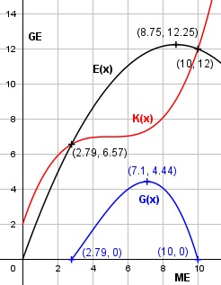

Aufgabe 99 Die Kostenfunktion eines Monopolisten lautet K(x) = 0,04x3 - 0,6x2 + 3x + 2 seine Nachfragefunktion pN(x) = - 0,16x + 2,8. a) Wo liegt seine Gewinnschwelle? b) Bei welcher Produktionsmenge entstehen sein maximaler Erlös und Gewinn? c) Bei welcher Produktionsmenge liegt sein Betriebsminimum? a) E(x) = pN(x) = x = (- 0,16x + 2,8) * x E(x) = - 0,16x2 + 2,8x G(x) = -0,16x2 + 2,8x - (0,04x3 - 0,6x2 + 3x + 2) G(x) = - 0,04x3 + 0,44x2 - 0,2x - 2 G'(x) = - 0,12x2 + 0,88x - 0,2 G''(x) = - 0,24x + 0,88 - 0,04x3 + 0,44x2 - 0,2x - 2 = 0 |:(-0,04) x3 - 11x + 5x + 50 = 0 Durch Probieren gefunden x1 = 10 Hornerschema: 1 -11 5 50 x1 = 10 10 -10 -50 ---------------------------- 1 -1 -5 0 Polynomdivision: x3 - 11x2 + 5x + 50 : (x - 10) = x2 - x - 5 -(x3 - 10x2) ------------ -x2 + 5x + 50 -(-x2 + 10x) ------------ -5x + 50 -(-5x + 50) ----------- 0 x2 - x - 5 = 0 p, q - Formel: p = -1, q = -5 x2,3 = x2,3 = 0,5 ± x2,3 = 0,5 ± x2,3 = 0,5 ± 2,29 x2 = 2,79 ME = Gewinnschwelle x1 = 10 ME = Gewinngrenze x3 = -1,79 keine Lösung b) E(x) = -0,16x2 + 2,8x E'(x) = -0,32x + 2,8 E''(x) = -0,32 < 0 --> Hochpunkt -0,32x + 2,8 = 0| +0,32x 0,32x = 2,8 | :0,32 x = 8,75 ME E(8,75) = -0,16 * 8,752 + 2,8 * 8,75 = 12,25 GE Der maximale Erlös entsteht bei 8,75 ME. Für den maximalen Gewinn gilt: -0,12x2 + 0,88x - 0,2 = 0 A, B, C - Formel: A = -0,12, B = 0,88, C = -0,2 x1,2 = x1,2 = x1,2 = -0,88 ± 0,82 x1,2 = -------------- -0,24 x1 = 7,1 ME G(7,1) = -0,04 * 7,13 + 0,44 * 7,12 - - 0,2 * 7,1 - 2 = 4,44 GE x2 = 0,25 ME liegt außerhalb der Gewinnzone G''(7,1) = -0,24 * 7,1 + 0,88 < 0 --> Hochpunkt Der maximale Gewinn entsteht bei 7,1 ME. c) Kv(x) 0,04x3 - 0,6x2 + 3x kv(x) = ------ = --------------------- x x kv(x) = 0,04x2 - 0,6x + 3 k'v(x) = 0,08x - 0,6 k''v(x) = 0,08 > 0 --> Tiefpunkt 0,08x - 0,6 = 0 | +0,6 0,08x = 0,6 |:0,08 x = 7,5 ME
